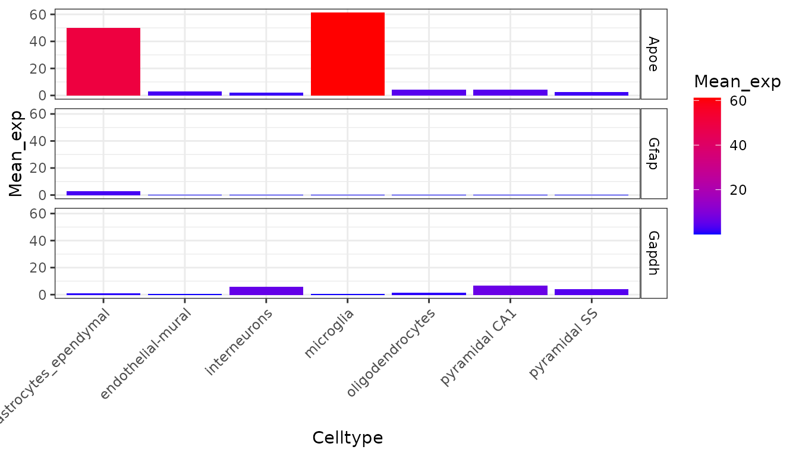
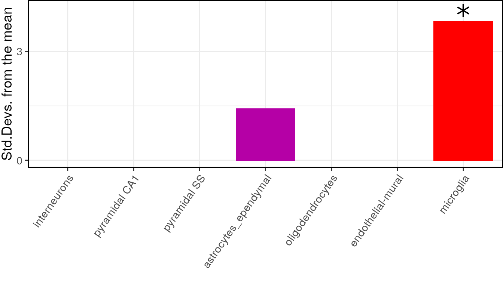
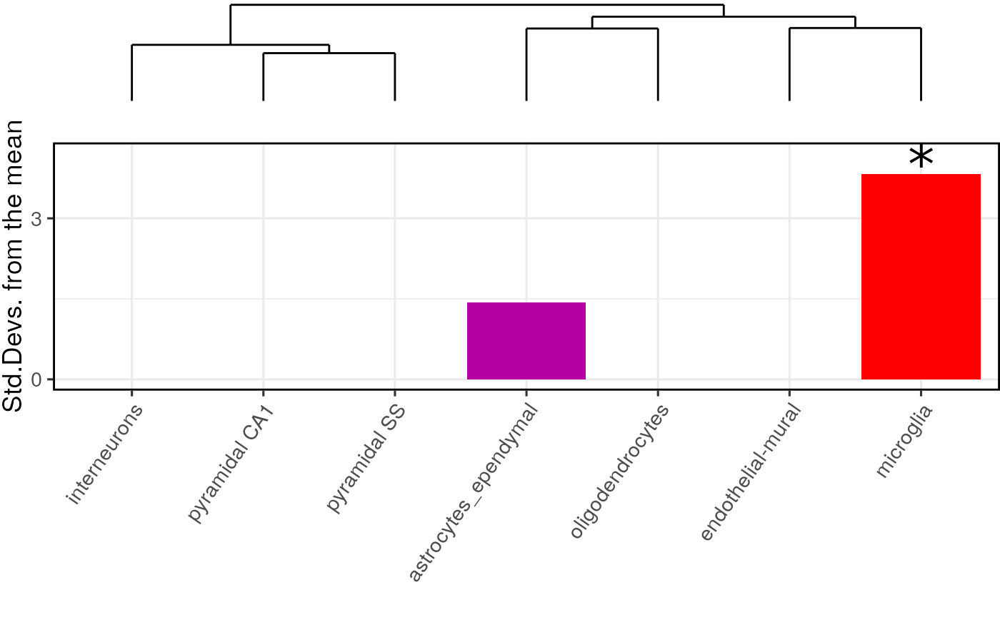

vignettes/extended.Rmd
extended.RmdIn the following vignette, we provide more a more in-depth version of the examples provided in the Getting started vignette.
For this example we use a subset of the genes from the merged dataset generated in the creating CTD vignette, which is accessed using ewceData::ctd().
## Load merged cortex and hypothalamus dataset generated by Karolinska institute
ctd <- ewceData::ctd() # i.e. ctd_MergedKI
plt <- EWCE::plot_ctd(ctd = ctd,
level = 1,
genes = c("Apoe","Gfap","Gapdh"),
metric = "mean_exp")
For the first demonstration of EWCE we will test for whether genes that are genetically associated with Alzheimer’s disease are enriched in any particular cell type.
This example gene list is stored within the ewceData package:
hits <- ewceData::example_genelist()
print(hits)## [1] "APOE" "BIN1" "CLU" "ABCA7" "CR1" "PICALM"
## [7] "MS4A6A" "CD33" "MS4A4E" "CD2AP" "EOGA1" "INPP5D"
## [13] "MEF2C" "HLA-DRB5" "ZCWPW1" "NME8" "PTK2B" "CELF1"
## [19] "SORL1" "FERMT2" "SLC24A4" "CASS4"All gene IDs are assumed by the package to be provided in gene symbol format (rather than Ensembl/Entrez). Symbols can be provided as any species-specific gene symbols supported by the package orthogene, though the genelistSpecies argument will need to be set appropriately.
Likewise, the single-cell dataset can be from any species, but the sctSpecies argument must be set accordingly.
The example gene list here stores the human genes associated with human disease, and hence are HGNC symbols.
The next step is to determine the most suitable background set. This can be user-supplied, but by default the background is all 1:1 ortholog genes shared by genelistSpecies and sctSpecies that are also present in sct_data.
We now need to set the parameters for the analysis. For a publishable analysis we would want to generate over 10,000 random lists and determine their expression levels, but for computational speed let us only use reps=100. We want to analyse level 1 annotations so set level to 1.
# Use 100 bootstrap lists for speed, for publishable analysis use >=10000
reps <- 100
# Use level 1 annotations (i.e. Interneurons)
annotLevel <- 1 We have now loaded the SCT data, prepared the gene lists and set the parameters. We run the model as follows, Note we set the seed to ensure reproducibility in the bootstrap sampling function:
# Bootstrap significance test, no control for transcript length and GC content
full_results <- EWCE::bootstrap_enrichment_test(sct_data = ctd,
sctSpecies = "mouse",
genelistSpecies = "human",
hits = hits,
reps = reps,
annotLevel = annotLevel)A note on both the background and target gene lists, other common gene list objects can be used as inputs such as BiocSet::BiocSet and GSEABase::GeneSet. Below is an example of how to format each for the target gene list (hits):
if(!"BiocSet" %in% rownames(installed.packages())) {
BiocManager::install("BiocSet")
}
if(!"GSEABase" %in% rownames(installed.packages())) {
BiocManager::install("GSEABase")
}
library(BiocSet)
library(GSEABase)
# Save both approaches as hits which will be passed to bootstrap_enrichment_test
genes <- c("Apoe","Inpp5d","Cd2ap","Nme8",
"Cass4","Mef2c","Zcwpw1","Bin1",
"Clu","Celf1","Abca7","Slc24a4",
"Ptk2b","Picalm","Fermt2","Sorl1")
#BiocSet::BiocSet, BiocSet_target contains the gene list target
BiocSet_target <- BiocSet::BiocSet(set1 = genes)
hits <- unlist(BiocSet::es_element(BiocSet_target))
#GSEABase::GeneSet, GeneSet_target contains the gene list target
GeneSet_target <- GSEABase::GeneSet(genes)
hits <- GSEABase::geneIds(GeneSet_target) The main table of results is stored in full_results$results. We can see the most significant results using:
knitr::kable(full_results$results)| CellType | annotLevel | p | fold_change | sd_from_mean | q | |
|---|---|---|---|---|---|---|
| microglia | microglia | 1 | 0.00 | 2.0037539 | 3.8229690 | 0.000 |
| astrocytes_ependymal | astrocytes_ependymal | 1 | 0.11 | 1.3594176 | 1.4291523 | 0.385 |
| oligodendrocytes | oligodendrocytes | 1 | 0.78 | 0.7903958 | -0.8909301 | 1.000 |
| endothelial-mural | endothelial-mural | 1 | 0.83 | 0.7587306 | -0.9521828 | 1.000 |
| pyramidal SS | pyramidal SS | 1 | 0.84 | 0.8338200 | -0.9271986 | 1.000 |
| pyramidal CA1 | pyramidal CA1 | 1 | 0.90 | 0.7882024 | -1.1989117 | 1.000 |
| interneurons | interneurons | 1 | 1.00 | 0.3868205 | -3.1123590 | 1.000 |
The results can be visualised using another function, which shows for each cell type, the number of standard deviations from the mean the level of expression was found to be in the target gene list, relative to the bootstrapped mean:
plot_list <- EWCE::ewce_plot(total_res = full_results$results,
mtc_method ="BH",
ctd = ctd) # optional (unless you want dendrogram)
print(plot_list$plain)
For publications it can be useful to plot a dendrogram alongside the plot. This can be done by including the cell type data as an additional argument. The dendrogram should automatically align with the graph ticks (thanks to Robert Gordon-Smith, Mres Molecular and Cellular Biosciences, Imperial College London for this solution):
print(plot_list$withDendro)
If you want to view the characteristics of enrichment for each gene within the list then the generate_bootstrap_plots function should be used. This saves the plots into the BootstrapPlots folder. This takes the results of a bootstrapping analysis so as to only generate plots for significant enrichments. The listFileName argument is used to give the generated graphs a particular file name. The savePath argument is used here to save the files to a temporary directory, this can be updated to your preferred location. The file path where it was saved is returned so the temporary directory can be located if used.
bt_plot_location <-
generate_bootstrap_plots(sct_data=ctd,hits=mouse.hits,
bg=mouse.bg,reps=reps,annotLevel=1,
full_results=full_results,
listFileName="VignetteGraphs",
savePath = tempdir())When analysing genes found through genetic association studies it is important to consider biases which might be introduced as a result of transcript length and GC-content. The package can control for these by selecting the bootstrap lists such that the ith gene in the random list has properties similar to theith gene in the target list. To enable the algorithm to do this it needs to be passed the gene lists as HGNC symbols rather than MGI.
The bootstrapping function then takes different arguments:
# Bootstrap significance test controlling for transcript length and GC content
cont_results <- EWCE::bootstrap_enrichment_test(sct_data = ctd,
hits = hits,
sctSpecies = "mouse",
genelistSpecies = "human",
reps = reps,
annotLevel = 1,
geneSizeControl = TRUE)Both the analyses shown above were run on level 1 annotations. It is possible to test on the level 2 cell type level annotations by changing one of the arguments.
# Bootstrap significance test controlling for transcript length and GC content
cont_results <- EWCE::bootstrap_enrichment_test(sct_data = ctd,
hits = hits,
sctSpecies = "mouse",
genelistSpecies = "human",
reps = reps,
annotLevel = 2,
geneSizeControl = TRUE)It is often useful to plot results from multiple gene list analyses together. The ewce_plot function allows multiple enrichment analyses to be performed together. To achieve this the results data frames are just appended onto each other, with an additional list column added detailing which analysis they relate to.
To demonstrate this we need to first generate a second analysis so let us sample thirty random genes, and run the bootstrapping analysis on it.
human.bg <- ewceData::mouse_to_human_homologs()$HGNC.symbol
gene.list.2 <- sample(human.bg,size = 30)
second_results <- EWCE::bootstrap_enrichment_test(sct_data = ctd,
sctSpecies = "mouse",
hits = gene.list.2,
reps = reps,
annotLevel = 1)
full_res2 = data.frame(full_results$results,
list="Alzheimers")
rando_res2 = data.frame(second_results$results,
list="Random")
merged_results = rbind(full_res2, rando_res2)
utils::sessionInfo()## R version 4.1.1 (2021-08-10)
## Platform: x86_64-pc-linux-gnu (64-bit)
## Running under: Ubuntu 20.04.2 LTS
##
## Matrix products: default
## BLAS/LAPACK: /usr/lib/x86_64-linux-gnu/openblas-pthread/libopenblasp-r0.3.8.so
##
## locale:
## [1] LC_CTYPE=en_US.UTF-8 LC_NUMERIC=C
## [3] LC_TIME=en_US.UTF-8 LC_COLLATE=en_US.UTF-8
## [5] LC_MONETARY=en_US.UTF-8 LC_MESSAGES=C
## [7] LC_PAPER=en_US.UTF-8 LC_NAME=C
## [9] LC_ADDRESS=C LC_TELEPHONE=C
## [11] LC_MEASUREMENT=en_US.UTF-8 LC_IDENTIFICATION=C
##
## attached base packages:
## [1] stats graphics grDevices utils datasets methods base
##
## other attached packages:
## [1] ewceData_1.1.0 ExperimentHub_2.1.4 AnnotationHub_3.1.6
## [4] BiocFileCache_2.1.1 dbplyr_2.1.1 BiocGenerics_0.39.2
## [7] EWCE_2.0.0 RNOmni_1.0.0 BiocStyle_2.21.4
##
## loaded via a namespace (and not attached):
## [1] readxl_1.3.1 backports_1.2.1
## [3] systemfonts_1.0.3 plyr_1.8.6
## [5] lazyeval_0.2.2 orthogene_0.99.8
## [7] listenv_0.8.0 GenomeInfoDb_1.29.10
## [9] ggplot2_3.3.5 digest_0.6.28
## [11] htmltools_0.5.2 fansi_0.5.0
## [13] magrittr_2.0.1 memoise_2.0.0
## [15] openxlsx_4.2.4 limma_3.49.4
## [17] globals_0.14.0 Biostrings_2.61.2
## [19] matrixStats_0.61.0 pkgdown_1.6.1
## [21] colorspace_2.0-2 blob_1.2.2
## [23] rappdirs_0.3.3 textshaping_0.3.6
## [25] haven_2.4.3 xfun_0.27
## [27] dplyr_1.0.7 crayon_1.4.1
## [29] RCurl_1.98-1.5 jsonlite_1.7.2
## [31] glue_1.4.2 gtable_0.3.0
## [33] zlibbioc_1.39.0 XVector_0.33.0
## [35] HGNChelper_0.8.1 DelayedArray_0.19.4
## [37] car_3.0-11 future.apply_1.8.1
## [39] SingleCellExperiment_1.15.2 abind_1.4-5
## [41] scales_1.1.1 DBI_1.1.1
## [43] rstatix_0.7.0 Rcpp_1.0.7
## [45] viridisLite_0.4.0 xtable_1.8-4
## [47] foreign_0.8-81 bit_4.0.4
## [49] stats4_4.1.1 htmlwidgets_1.5.4
## [51] httr_1.4.2 ellipsis_0.3.2
## [53] farver_2.1.0 pkgconfig_2.0.3
## [55] sass_0.4.0 utf8_1.2.2
## [57] labeling_0.4.2 tidyselect_1.1.1
## [59] rlang_0.4.12 reshape2_1.4.4
## [61] later_1.3.0 AnnotationDbi_1.55.2
## [63] munsell_0.5.0 BiocVersion_3.14.0
## [65] cellranger_1.1.0 tools_4.1.1
## [67] cachem_1.0.6 generics_0.1.0
## [69] RSQLite_2.2.8 broom_0.7.9
## [71] evaluate_0.14 stringr_1.4.0
## [73] fastmap_1.1.0 yaml_2.2.1
## [75] ragg_1.1.3 babelgene_21.4
## [77] knitr_1.36 bit64_4.0.5
## [79] fs_1.5.0 zip_2.2.0
## [81] purrr_0.3.4 KEGGREST_1.33.0
## [83] gprofiler2_0.2.1 future_1.22.1
## [85] mime_0.12 compiler_4.1.1
## [87] plotly_4.10.0 filelock_1.0.2
## [89] curl_4.3.2 png_0.1-7
## [91] interactiveDisplayBase_1.31.2 ggsignif_0.6.3
## [93] tibble_3.1.5 bslib_0.3.1
## [95] homologene_1.4.68.19.3.27 stringi_1.7.5
## [97] highr_0.9 desc_1.4.0
## [99] forcats_0.5.1 lattice_0.20-45
## [101] Matrix_1.3-4 vctrs_0.3.8
## [103] pillar_1.6.4 lifecycle_1.0.1
## [105] BiocManager_1.30.16 jquerylib_0.1.4
## [107] cowplot_1.1.1 data.table_1.14.2
## [109] bitops_1.0-7 httpuv_1.6.3
## [111] patchwork_1.1.1 GenomicRanges_1.45.0
## [113] R6_2.5.1 bookdown_0.24
## [115] promises_1.2.0.1 gridExtra_2.3
## [117] rio_0.5.27 IRanges_2.27.2
## [119] parallelly_1.28.1 codetools_0.2-18
## [121] MASS_7.3-54 assertthat_0.2.1
## [123] SummarizedExperiment_1.23.5 rprojroot_2.0.2
## [125] withr_2.4.2 sctransform_0.3.2
## [127] S4Vectors_0.31.5 GenomeInfoDbData_1.2.7
## [129] parallel_4.1.1 hms_1.1.1
## [131] grid_4.1.1 tidyr_1.1.4
## [133] rmarkdown_2.11 MatrixGenerics_1.5.4
## [135] carData_3.0-4 ggpubr_0.4.0
## [137] Biobase_2.53.0 shiny_1.7.1